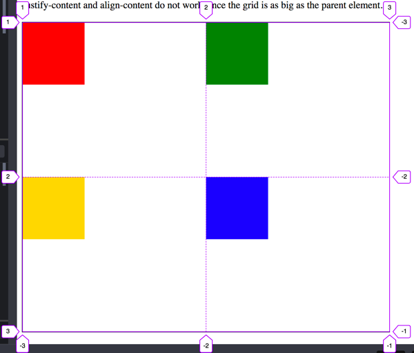
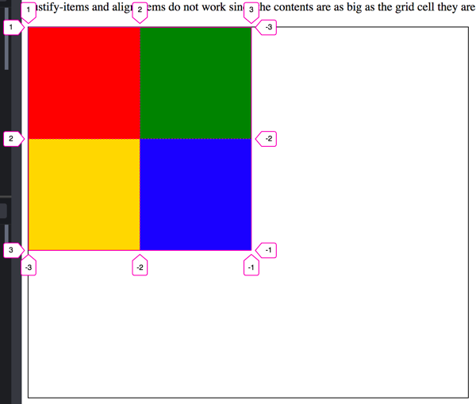
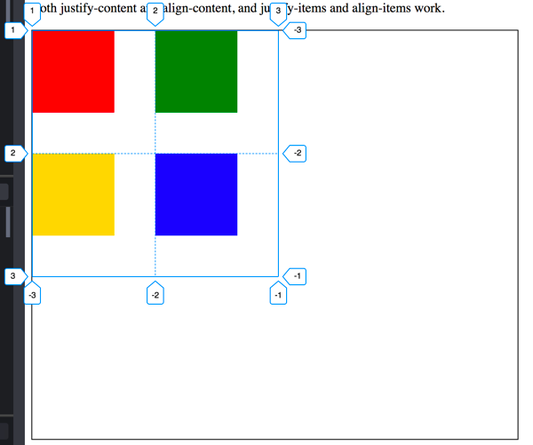

In this activity we will take another look at positioning and layout
with CSS. We will get some more practice using CSS Grid and also look
closely at alignment. Both with Grid and without.
Activity Instructions
Grid Practice
Visit
CSS Grid Garden
and complete all 28 levels. It will probably be helpful to have
the
Complete Guide to CSS Grid
open in another window for reference. Take a screenshot of the
final screen when you are done.
Grid Alignment
You may want to review the following short videos before
completing the next section.
Vocabulary time! There are a few terms we should learn to help
make sense of alignment with CSS Grid.
justify-content
Aligns the grid container along the inline axis (by default
horizontal). This only works when the grid is narrower than
the space available.
justify-items
Aligns the grid item contents along the inline axis (by
default horizontal). This only works when the contents of a
grid cell are narrower than the grid cell.
align-content
Aligns the grid container along the block axis (by default
vertical). This only works when the grid is shorter than the
space available.
align-items
Aligns the grid item contents along the block axis (by default
vertical). This only works when the contents of a grid cell
are shorter than the grid cell.
So to review, justify aligns horizontal by default,
align takes care of the other direction (vertical
alignment by default). If we want to align the grid container we
use the content suffix. If we want to align the
contents of the grid items within the grid cells then we use
items
Visit
this codepen
(Codepen is a site that allows you to practice writing HTML and
CSS). You should see three sets of four boxes. The boxes have
already been positioned into a square using CSS Grid. There are
some differences between them however. If you look at the
.content1 class you will see that the rows and
columns have been sized using 1fr. So the grid will use
up all the space available in the grid container, and we will end
up with 2 equal columns and 2 equal rows.
If we look in the browser development tools at the actual grid we
see this:

Grid lines for content1
Let's try centering the grid and grid items. Add the folowing to
.content1
justify-content: center;
align-content: center;
You might be surprised to see nothing happened
until you remember that content refers to aligning the
grid container. The grid container is completely filling the
parent element it is in. If something is as big as it's parent
then it is technically already centered...it can't move.
Next add these lines one at a time:
justify-items: center;
align-items: center;
Now we see something happen! The boxes centered themselves inside
of the grid cell they were in. First horizontally
(justify), then vertically (align)
The next example uses rows and columns of a fixed size.
150px to be exact. This time the contents of the grid
is the same size as the grid cell, but the grid itself is smaller
than the space it has available. Here is a picture of the grid
lines this time.

Grid lines for Content2
This time if we attempt to align the items nothing happens. Try
adding the following properties to .content2
justify-items: center;
align-items: center;
...but now we can align the grid container. Add these one at a
time:
justify-content: center;
align-content: center;
Last example. For .content3. We have the grid
container smaller than the parent, and the grid items smaller than
the grid cell.

Grid lines for Content3
Add the following four lines to the .content3 rule
one at a time and watch what happens.
Earlier in the semester you were introduced to the concept of
block and inline elements. Blocks flow
vertically down the page by default, and inline flows horizontally
across. You were also shown how to align both inline and block
elements. Let's review that again now.
Block elements first: block elements take up 100% of the width
available to them. So if we want to align them we first have to
set a width of less than 100% on them. Then we can set the left
and/or right margin to auto. For center we would set
both left and right to auto (margin: 0 auto;), for right aligned blocks we would set just the left
margin to auto (margin-left: auto;). Blocks are left
aligned by default so we don't have to do anything for that!.
Take a look at the following screenshot to see what we are trying
to do.
Poem alignment example
The alignment of the poem can be described like this:
Block 1 should be left aligned
Block 2 should be center aligned
Block 3 should be right aligned
Block 4 should be center aligned
The first paragraph in blocks 1,2,3 should be left aligned.
The second paragraph in blocks 1,2,3 should be center aligned.
The third paragraph in blocks 1,2,3 should be right aligned.
The first paragraph in block 4 should be right aligned.
The second paragraph in block 4 should be center aligned.
The third and fourth paragraphs in block 4 should be left
aligned.
All of our blocks are made of
<section> elements. Remember that if we want to
align a block element (sections are block elements) we need to set
a width, then adjust the margins. Set a width of 50% on
all of the <section> elements.
Then set the alignment of each block by adjusting the
margins appropriately.
Next we need to align the paragraphs. We could add a
class to each paragraph and change them that way...but
that is a lot of extra typing, and there is another way. We can
take advantage of complex selectors. Specifially the
:nth-of-type()
pseudo selector.
:nth-of-type() counts the number of times a
particular element is the child of another element. Here is an
example with paragraphs:
p:nth_of_type(1) { /* first paragraph */}
p:nth-of-type(2) { /* second paragraph */}
p:nth-of-type(3) { /* third paragraph */}
Using those selectors write the css that will format the text
according to the requirements above. Note that block4 is formatted
differently than the others. For those paragraphs we will need to
be more specific. Target just paragraphs that are in the
.block4 element.
Take a screenshot and submit
Once you get your alignments all right...take a screenshot of the
text and submit it to ILearn.
Grading
This activity will be graded using the following rubric:
Students completed the assignment as outlined above. (10 points)